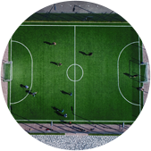
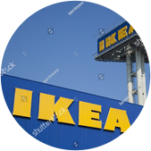
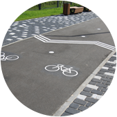
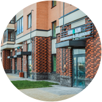

<div class="sect sect_5">
	<div class="sect_content">
		<div class="wrapper">
			<div class="row">
				<div class="col-8 off-4">
					<div class="sect_header">ЭТО РАЗНООБРАЗНЫЙ <span class="b">ДОСУГ ДЛЯ ВСЕЙ СЕМЬИ</span></div>
					<div class="sect_desc">В периметре квартала и в непосредственной близости от него будет все, что необходимо каждой семье для полноценного отдыха и совместного досуга: бульвар Белых Ночей с его велодорожками, спортивными площадками, кафе и зонами отдыха, Финский залив, Шунгеровский лесопарк и множество рекреационных зон Ломоносовского района. Все это даст возможность жителям квартала наслаждаться природой и получать удовольствие от загородной жизни, отдыхая от городской суеты. А наличие рядом магазинов и крупного торгового комплеса позволят экономить время на шопинге. </div>
				</div>
			</div>
					

			<div class="sect_block_list row aligncenter">
				<div class="sect_block col-3">
					
					<div class="sect_block__title">СПОРТИВНЫЕ <br>ПЛОЩАДКИ</div>
					<div class="sect_block__desc"><a href="javascript:;" class="close"></a>Пользу физических упражнений для человека сложно переоценить. А занятия спортом на свежем воздухе – это двойная польза. Именно поэтому на территории ЖК NEWПИТЕР предусмотрено множество общедоступных универсальных уличных спортивных комплексов для взрослых и детей.</div>
				</div>

				<div class="sect_block col-3">
					
					<div class="sect_block__title">МЕГА-IKEA <br>НОВОСЕЛЬЕ </div>
					<div class="sect_block__desc"><a href="javascript:;" class="close"></a>В конце 2019 года рядом с жилым комплексом NEWПИТЕР появится один из крупнейших ТРК МЕГА-IKEA в России. На первом этапе будет построена IKEA, вторым станет возведение ТЦ МЕГА.</div>
				</div>

				<div class="sect_block col-3">
					
					<div class="sect_block__title">РЕСТОРАНЫ <br>И КАФЕ</div>
					<div class="sect_block__desc"><a href="javascript:;" class="close"></a>Разнообразные предприятия общепита разместятся и на первых этажах корпусов комплекса, и на территории бульвара Белых Ночей. Здесь вы сможете найти любой формат: coffee-to-go, уютные кафе для посиделок с друзьями и семейные рестораны, где можно провести торжество или просто поужинать всей семьей. </div>
				</div>

				<div class="sect_block col-3">
					
					<div class="sect_block__title">ВСЕ ДЛЯ <br>ВЕЛОПРОГУЛОК</div>
					<div class="sect_block__desc"><a href="javascript:;" class="close"></a>Вдоль всех улиц в микрорайоне будут проложены удобные велосипедные дорожки, а возле каждого подъезда оборудована удобная велопарковка.</div>
				</div>

				<div class="sect_block col-3">
					
					<div class="sect_block__title">МАГАЗИНЫ <br>В ШАГОВОЙ ДОСТУПНОСТИ</div>
					<div class="sect_block__desc"><a href="javascript:;" class="close"></a>В помещениях первых этажей корпусов ЖК разместятся различные коммерческие структуры:  продуктовые магазины, салоны красоты, аптеки, банкоматы, всевозможные сервисные службы, готовые ежедневно работать для вашего комфорта.</div>
				</div>

				<div class="sect_block col-3">
					
					<div class="sect_block__title">СПОРТИВНЫЙ КОМПЛЕКС <br>И БАССЕЙН</div>
					<div class="sect_block__desc"><a href="javascript:;" class="close"></a>Для поклонников спорта и активного образа жизни на территории квартала будет построен современный спортивный комплекс площадью 6 000 м2 с бассейном. А пока жители квартала могут посещать спортивный клуб «Атлант», который расположен в шаговой доступности в поселке Новоселье.</div>
				</div>

				<div class="sect_block col-3">
					
					<div class="sect_block__title">ЗОНЫ <br>ОТДЫХА</div>
					<div class="sect_block__desc"><a href="javascript:;" class="close"></a>На территории пешеходного бульвара будут размещены несколько зон для тихого отдыха, оборудованные креслами, скамьями, столиками и навесами. Каждый житель сможет посидеть здесь с книгой или просто насладиться видом, спрятавшись от непогоды или солнца. </div>
				</div>

				<div class="sect_block col-3">
					
					<div class="sect_block__title">ЛЕДОВАЯ <br>АРЕНА</div>
					<div class="sect_block__desc"><a href="javascript:;" class="close"></a>В пос. Новоселье введена в эксплуатацию ледовая арена ICE RINK – самая зрелищная игровая площадка по хоккею в городе. Здесь вам и вашим детям будут предложены занятия в хоккейной школе, школе по фигурному катанию, общественный каток, фитнес и многое другое.</div>
				</div>
			</div>
		</div>
	</div>
</div>